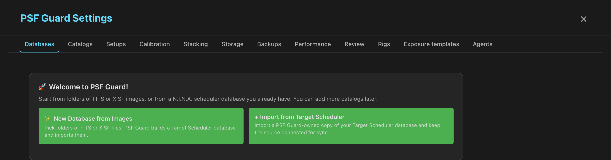
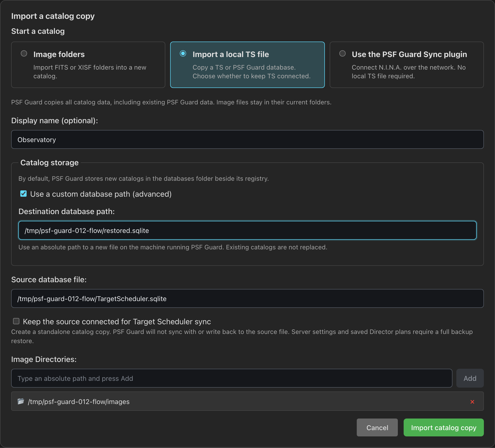
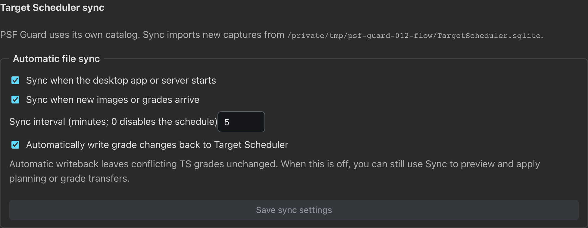
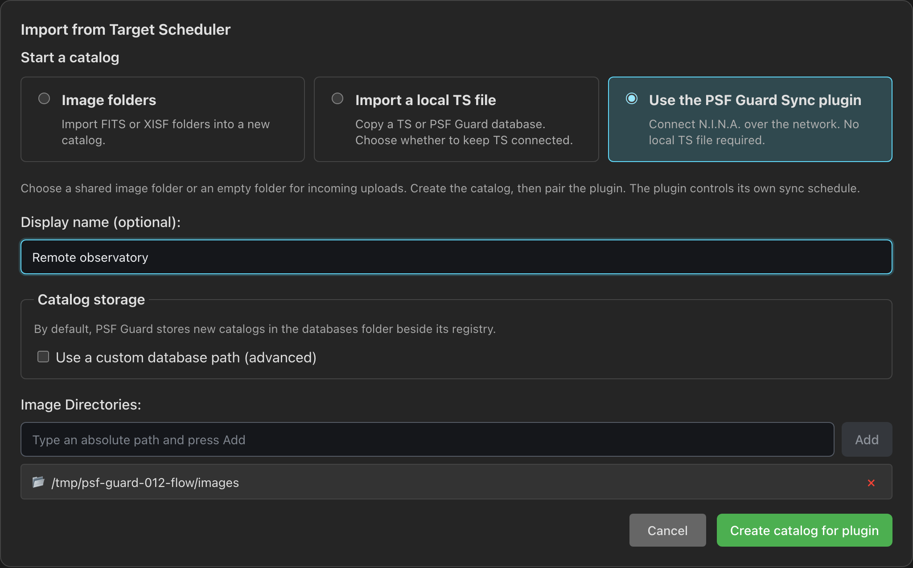
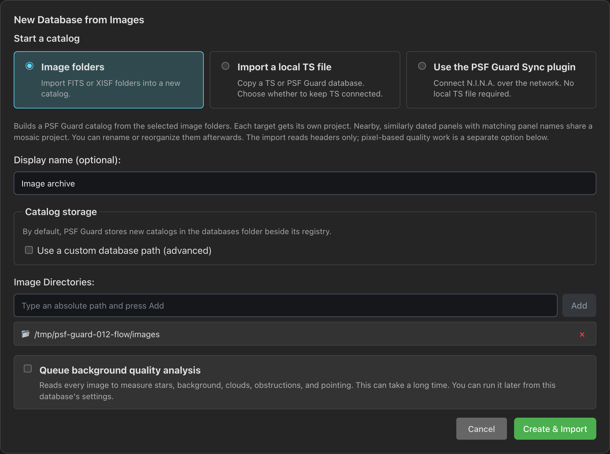
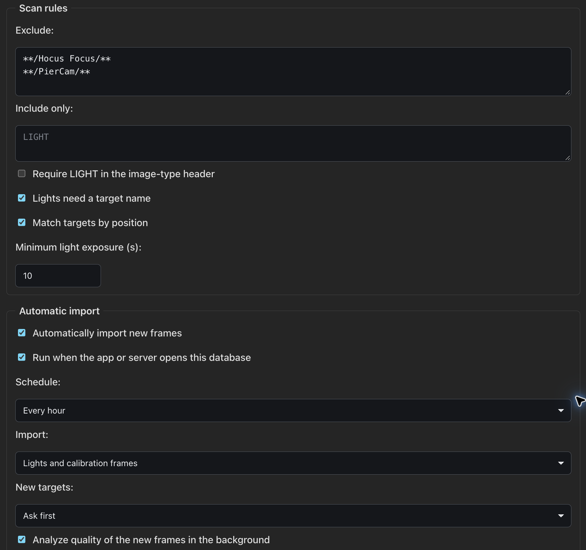
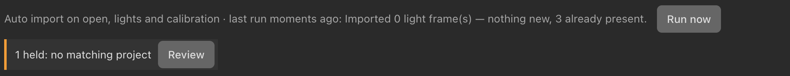
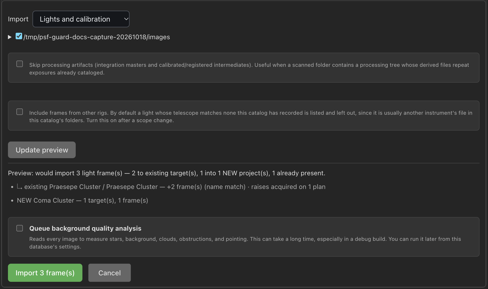
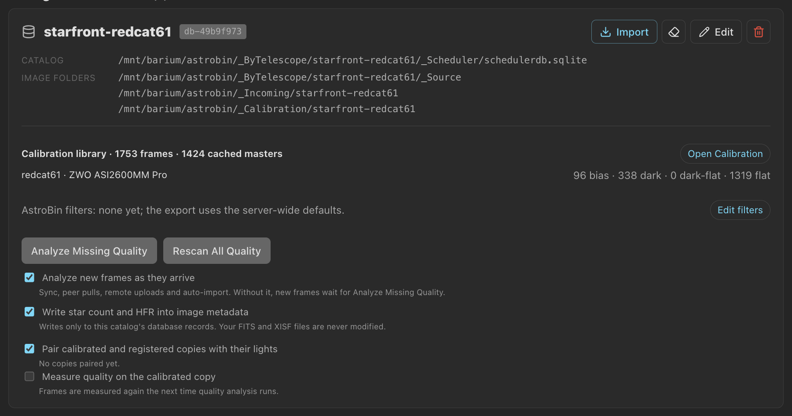
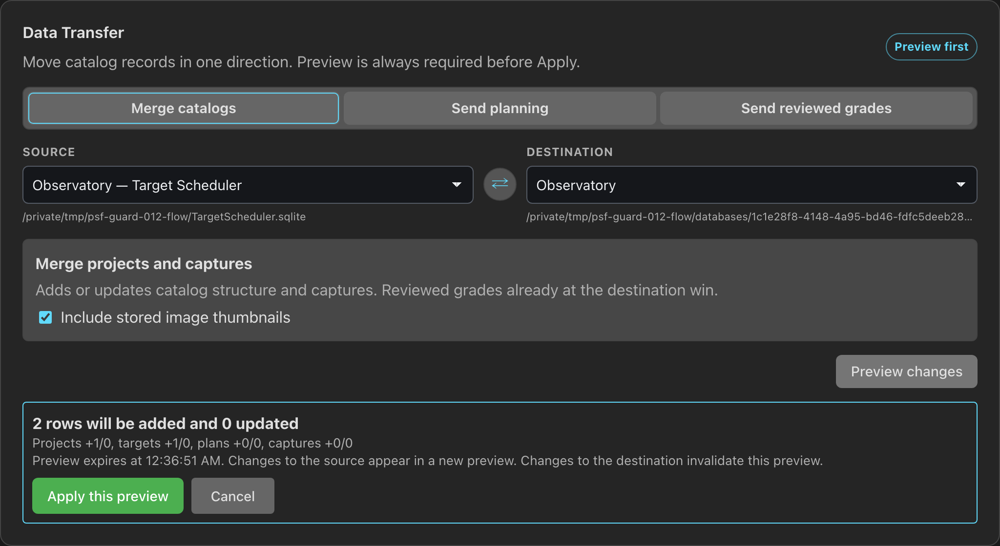

Import Images
Import Target Scheduler into a PSF Guard-owned catalog, connect the N.I.N.A. Sync plugin, or build a catalog from FITS or XISF folders. Keep captures and grades in sync while quality measurements run in the background.
The importer reads headers first and leaves pixel work for later.

Import from Target Scheduler
For new Target Scheduler databases, choose Settings → Databases → Import from Target Scheduler to import the database and set up sync.
Your current Target Scheduler setup will keep working in 0.12. A later update will create a PSF Guard catalog for you and keep captures, plans and grades in sync with Target Scheduler.
Separate catalogs let us add features to PSF Guard and support new Target Scheduler versions. We plan to remove direct database access in 0.13 or later.
The desktop app allows database management. A browser server needs
--allow-database-management; see server setup.
- Open Settings → Databases → Import from Target Scheduler.
- Choose Import a local TS file, enter the source file and an optional display name, then add the folders containing your images. The source needs Target Scheduler schema 22 or newer, with stable GUIDs.
- Leave Keep the source connected for Target Scheduler sync on, then click Import from Target Scheduler.
- Review the catalog's automatic sync settings. New local-file imports enable capture sync and grade writeback.

PSF Guard reads the source through a consistent, read-only SQLite snapshot. The copy keeps IDs, GUIDs, thumbnails and existing PSF Guard analysis and calibration records. The import does not write to the source.
Import a standalone copy or choose storage
Turn off Keep the source connected for Target Scheduler sync and choose Import catalog copy for a standalone catalog. PSF Guard keeps the embedded data without enabling source sync or writeback.
New catalogs use the databases/ folder beside the registry.
Under Catalog storage, choose Use a custom database path
(advanced) to enter an absolute path to a new file on the server. This
option also works for image folders and plugin catalogs. Existing files are never
replaced. A file import needs an existing destination folder.

Use a full backup to restore settings, accounts, configured image folders and saved Director plans as well as catalogs. A catalog copy restores only that catalog. Raw images remain in their original folders.
Set automatic sync
Under Target Scheduler sync on the imported catalog, choose when to import captures:
- Sync when the desktop app or server starts.
- Sync when new images or grades arrive. PSF Guard checks about every ten seconds and starts runs no more than once per thirty seconds.
- Sync interval (minutes; 0 disables the schedule). The default is five minutes. Zero leaves startup and change detection unchanged.
Automatically write grade changes back to Target Scheduler controls automatic grade delivery separately. Click Save sync settings after changing these choices. Capture imports preserve local planning and reviewed grades. Writeback updates grades, reject reasons and accepted counts together; conflicting TS grades stay unchanged and appear for review.

Turn grade writeback off to use reviewed transfers instead. If the source is unavailable, the working catalog stays usable and the sync job reports the error. Pending local changes survive restarts.
Director activation sends approved planning through the same saved TS connection, even when automatic grade writeback is off. Its preview shows the destination and transfer counts. Failed deliveries stay pending and retry through the saved sync settings; a changed TS project needs a new activation preview. See Exposures & Activation.
Start with the Sync plugin
Choose Use the PSF Guard Sync plugin, add a shared image folder or an empty folder for incoming uploads, then click Create catalog for plugin. No local TS file is required. PSF Guard opens the catalog's pairing controls; the plugin controls its own sync schedule.

Click Generate pairing code and enter the server URL and code in N.I.N.A.'s PSF Guard Sync plugin. Click Pair, then Test connection. To upload image files too, enable Accept remote image uploads and choose a Receive directory. See Connect N.I.N.A..
Create a catalog from images
The desktop app always allows database changes. A web server needs them turned on, bound to a trusted interface:
psf-guard server --host 127.0.0.1 --allow-database-managementOn any other address the server refuses to start until a user account exists. See Server Accounts.
- Open Settings → Databases → New Database from Images.
- Enter a name and one or more absolute folder paths. If a path is invalid, the form keeps your entry and shows which path to correct.
- Leave Queue background quality analysis off for a quick first import.
- Choose Create & Import. Progress survives closing or reloading the page.

The UI saves the SQLite file under databases/ beside the registry and
shows its path on the database card. An empty folder is fine for a catalog that will
receive N.I.N.A. plugin syncs. The CLI writes the file where you say:
psf-guard create-db ./archive.sqlite /data/lights /data/more-lights --name "Archive"--dry-run previews without writing; --no-register keeps the
file out of the registry. See CLI Reference.
What counts as a frame
A scan reads .fits, .fit, .fts and
.xisf in any letter case and leaves sidecar files alone. Monolithic XISF
from PixInsight carries the same keywords, so it groups, grades, previews and stacks
like FITS. An XISF frame that declares bounds="0:1" is read onto a 16-bit
scale, so its background and star flux compare with camera frames. The file is never
changed.
FITS images kept in an extension, tile-compressed (fpack), signed 16-bit and 64-bit
integer images open too. Blank pixels read as missing, and HIERARCH keywords
are kept.
What the header import builds
PSF Guard creates a catalog compatible with Target Scheduler; you do not need Target Scheduler to import images. Lights start as Pending. From their headers PSF Guard builds:
- Targets from
OBJECTnames, one project each by default, across any number of nights. A different telescope, camera, focal length or binning never shares a project. - Mosaic projects only when panel names share a root, centers lie within five degrees, and dates fall within 14 days.
- Coordinates from the median header position. Target Scheduler stores RA in decimal hours and Dec in degrees.
- Exposure plans per filter, gain, offset, binning, readout mode and exposure length, with desired and acquired counts seeded from the frames.
- Exposure templates for those plans. A plan goes on an existing
template with the lights' filter, binning and default length, whose gain, offset
and readout mode each equal the lights' or are left at -1, the camera's default.
An exact match comes first, and groups that land on one template share one plan.
With no such template, import makes one pinned to the lights' gain, offset and
readout mode, with their length as its default, such as
L G100 O30 1x1 300s. A template whose default is another length never takes a new plan, so lights of two lengths get two templates.
Bias, dark, dark-flat and flat frames go to PSF Guard's own calibration tables in
the same file, never to acquiredimage. Twilight flats count as flats. A
calibration frame on disk twice is catalogued once, and Repair
duplicates… on the Calibration page merges rows an older import recorded
twice. See Calibration Libraries.
OBJECT against
the pixels. The quality scan adds star measurements, photometry, spatial screening
and fresh pointing checks later.
Add new frames
Click Import on a database card. A dry preview lists frames that attach to existing targets and frames that start new projects. It also says what the import changes in what Target Scheduler will shoot: an existing target's line ends with, for example, "adds 1 exposure plan" or "raises acquired on 2 plans", and a line counts any new exposure templates. Set the scope, choose Update preview, then confirm.
- Import: lights and calibration (default), lights only, or calibration only.
- Folders: each image root and two levels below it. Tick one night's folder to import just that night.
- Skip processed files: skip integration masters. When pairing is off, also skip calibrated and registered copies. Off by default.
- Include frames from other rigs: import lights from a telescope the catalog has not seen before. By default, PSF Guard lists those lights by rig, with an example file, without importing them. When telescope headers are missing, it checks the camera instead. Turn this on when you change telescopes; later imports will accept the new rig's frames.
A basename the catalog holds is skipped, as is one a
removed reject held. A new light joins a
target with the same OBJECT name, else one within 0.5° unless the scan
rules turn Match targets by position off, else starts a new project
and target. Calibration frames are matched by path and file fingerprint.
A light that joins an existing target goes on one of its exposure plans of the same length whose template has the light's filter and binning, with gain, offset and readout mode equal to the light's or left at -1. A plan on an exact match comes first. When no plan fits and the run may add one, the new plan's template is chosen as for a new target. Automatic import, Review, remote uploads and the CLI follow the same rules.
Imports, syncs and project saves that meet a write by N.I.N.A. or a background pass wait for it to finish, instead of failing with "database is locked".
psf-guard import archive ./new-frames --dry-run
psf-guard import archive ./new-frames
psf-guard import archive ./new-flats --calibration-only
psf-guard import archive ./processing-tree --skip-processed
psf-guard import archive ./new-camera --accept-other-rigs
psf-guard import archive ./night --exclude '**/Hocus Focus/**'--no-attach makes every new frame start its own structure.
--exclude leaves files and folders out, as an exclude scan rule does;
repeat it for more patterns. create-db takes it too, and an import into a
registered database also follows that database's scan rules.
Calibrated and registered copies
A calibrated or registered copy that WBPP, Siril, ASTAP, DeepSkyStacker or another tool wrote is paired with the light it came from, matched by capture time, exposure, filter, target and camera. It is not imported as another light.
- A calibrated copy with no raw light becomes the light. If the raw frame arrives later through import or sync, it replaces the copy in that row and keeps the grade.
- Copies already on disk pair after each folder refresh.
- Image detail switches between a frame and its copies with V.
- A rejected frame's copies go into the reject archive with it, and come back when it is restored.
- Measure quality on the calibrated copy, per database, scores the copy instead of the raw file. Frames measured from calibrated pixels are scored only against each other.
Turn pairing off per database with Pair calibrated and registered copies
with their lights, or --no-pairing on the CLI.
Scan rules
Image folders often hold more than lights: autofocus frames, plate-solve tests, pier-camera timelapses, processing output. Scan rules leave them out of every import from a database's folders, so the files can stay where they are. Set them under Settings → Databases → Edit → Scan rules:
- Exclude: one pattern per line. A matching file or folder is left
out, and nothing below a matching folder is read.
**/Hocus Focus/**keeps Hocus Focus's autofocus frames out. - Include only: when set, only files that match a pattern, or sit
in a folder that does, are read.
LIGHTkeeps N.I.N.A.'sLIGHTfolders. - Lights must say LIGHT: leave out a frame with no
IMAGETYP(orFRAME), instead of treating it as a light. - Lights need a target name: leave out a light with no
OBJECT, as is common with autofocus and test frames. - Shortest light (s): leave out lights shorter than this, or with no exposure time.
- Match targets by position, on by default: a light whose
OBJECTmatches no target joins the nearest one within 0.5°. Off, only an exact name match joins.
Patterns match a path relative to the image folder, in any letter case, with
/ or \ between folders. A pattern with no /
matches a name at any depth; one with a / reads from the image folder, so
/FLAT matches only at the top. * stays within one folder
name and ** crosses folders. A bad pattern is refused on save, with the
reason. So is a full path such as /data/Images/Hocus Focus, which could
never match; the error gives the pattern to write instead, here
/Hocus Focus.
A .psfguardignore file skips its folder and everything below it on
every import: manual, automatic, the CLI, and a new catalog made from images. Its
contents are not read. Both rules hold when an import starts inside an excluded or
ignored folder, as Review does: it reads nothing there.
The three light filters apply only to frames that would become lights; exclude and include patterns apply to calibration frames too. The preview and automatic import status summarize what the scan rules excluded, such as "12 skipped by scan rules", "1 folder(s) skipped by .psfguardignore" or "3 left out: no target name". Frames already in a catalog stay. A remote upload from N.I.N.A. does not use scan rules.
Import new frames automatically
Edit a database under Settings → Databases and turn on Automatic import:
- Run when the app or server opens this database, on a Schedule from every 15 minutes to every day, or both.
- Import: lights and calibration frames, lights only, or calibration frames only.
- New targets: what a run does with lights that match no target in the catalog. Ask first, the default, holds them. Leave out lists them and does nothing more. Create a project creates projects and targets for them.
- Analyze quality of the new frames in the background and Include frames from other rigs work as for a manual import.

Under Ask first, a run attaches frames for targets the catalog has and writes nothing for the rest. The database's status line then says, for example, "11 held: no matching project", with a Review button that opens the import preview for the folders that hold them; confirm new projects there as for a manual import. Held frames are read again on each run until they are imported or a scan rule leaves them out. Ask first is the default because the scheduler database is often shared with N.I.N.A. and synced to the rig, so a project a run made would land on the live rig before anyone saw it.

What a run changes in Target Scheduler
Under Ask first and Leave out, a run leaves scheduling alone in projects it did not make, those whose description does not start with "Imported by PSF Guard". There it only adds image rows to exposure plans the target already has for the frame's filter settings and exposure, and leaves their counts alone. A frame that would need a new template or plan there is held, "no exposure plan", and Review previews it with the rest. In projects an import made, a run adds plans and raises counts. Create a project and every import a person starts do both everywhere; the preview says which plans they add or raise.

A run reads only the configured folders, so it works without database management. It drops every file the catalog already holds before reading a header, so a folder of known frames costs a directory walk and one query. Lights the scan rule filters left out are not read again while their file is unchanged. The database row shows the schedule, the last result, the next run and Run now. A run waits while another import, an upload or an interactive job is under way.
Files copied in by hand
PSF Guard rescans each database's image folders on its own every five minutes, and after a sync or an automatic import. To look sooner, an editor chooses ⋯ → Rescan image folders in Images or Sequence. It finds image files added since the last scan, so their frames find them at once. It imports nothing; Import or automatic import does that.
Fill in quality data
Each database card has three quality controls:
- Analyze Missing Quality measures frames with no results and keeps valid cached work.
- Rescan All Quality measures everything again.
- Analyze new frames as they arrive measures frames that come by sync, peer pull, remote upload or automatic import, a few minutes after the last one finishes. At startup, the server also finds frames that arrived while it was stopped. Off by default.

The scan uses the N.I.N.A. Fast detector, so star counts and HFR compare with Target Scheduler's. When it finds no stars, HocusFocus measures the frame instead. A file still being copied is measured again later rather than scored as empty. Jobs yield to anything you are waiting on, and plate solves run several frames at once within the processor share in Settings → Performance.
Write star count and HFR into image metadata, on by default, fills empty star fields in the catalog. N.I.N.A.'s own values are never replaced, and FITS and XISF files are never changed.
Organize projects and targets
The Library's Edit project renames projects and targets, moves a target to another project, and merges projects. Merge target joins two names for one target after Preview merge. To split a target, select frames in Images and choose ⋯ → Move exposures; Preview move shows the result before Apply move. Files, grades and image GUIDs never change. These edits need an editor account, not database management.
Correct the imported plan
Choose ⚙ (or Planning on a card) in the Library. The plan's workspace opens. Its Rigs tab holds each database's Target Scheduler settings: project state, priority and scheduling limits, target coordinates, rotation and ROI, and each exposure plan. See Planning.
Sync with the telescope database
Preview every change before Apply.
Open Settings → Sync and select the owned catalog and its Target Scheduler connection. You do not need to register the source as another catalog. For transfers between other catalogs, register both first.
- Merge catalogs copies new or changed projects, targets, plans, captures and grades from the telescope copy. Grades already reviewed here win.
- Send planning sends projects, targets, templates, plans and rules back, without touching captures or grades.
- Send reviewed grades sends Accepted and Rejected grades for matching image GUIDs.

psf-guard sync pull --from telescope.sqlite --to archive.sqlite --dry-run
psf-guard sync planning --from archive.sqlite --to telescope.sqlite --dry-run
psf-guard sync grades --from archive.sqlite --to telescope.sqlite --dry-run